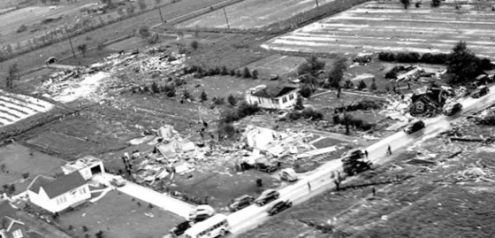

The 1946 Windsor F4
On June 17th, 1946, one of the deadliest tornadoes in Canadian history touched down. It would touch down in Michigan, across the border, dealing relatively weak damage while in there, before crossing the Detroit River and into what is now LaSalle, and then ending near Tecumseh on Lake St. Clair. This is one of the lesser-known F4's, mostly due to it touching down in the 1940's, and it being a Canadian tornado. In fact, we almost didnt even know most of the information about it, since many of the records were lost or destroyed, specifically newspaper's, which is where we get alot of information from older, pre-1970's tornadoes, where we decided it was a good thing to write down and record information about tornadoes.
A brief Description
This F4 touched down in the melvindale neighbourhood in Detroit, and tracked ENE. During its time in Michigan, it did minor damage and was rather uneventful, Although notably, it passed right over Zug Island and the Rouge River. However, once it crossed the Detroit River, it became much more infamous. It started to shrink and intensify, somewhat similiar to the Elie F5, Canada's strongest-rated tornado. More on the path later. The tornado impacted the windsor area hard, with the death toll between 15 to over 20 people. The death toll is high debated, as the records and reports range greatly, but semi-officially, the death toll is 17, which makes it the 3rd deadliest tornado in Canadian history, and the deadliest in Ontario. Many were also injured, with over 100 reports, and around 20 seriously injured. This F4 was also investigated by Environment Canada to see if could be upgraded to an F5 rating, but they later concluded that there was not enough evidence.
The Path
 The path of this F4 is also somewhat unique. As when it formed it was moving SE and was wide and weak. When it crossed the detroit river, it started to tighten in width, and then it took a ENE turn, into the city of Windsor. It would jog along that direction, narrowly avoiding the Windsor Airport, and continue into the town of Tecumseh, where it would then go over Lake St. Clair, where it would lift over the water. Over the Tornado's life-span, the damage path was narrow, due to the tornado being a rope/stovepipe tornado.
The path of this F4 is also somewhat unique. As when it formed it was moving SE and was wide and weak. When it crossed the detroit river, it started to tighten in width, and then it took a ENE turn, into the city of Windsor. It would jog along that direction, narrowly avoiding the Windsor Airport, and continue into the town of Tecumseh, where it would then go over Lake St. Clair, where it would lift over the water. Over the Tornado's life-span, the damage path was narrow, due to the tornado being a rope/stovepipe tornado.

The Damages

One of the most memorable part of this tornado is the damage. The damage inflicted was something else, and was even looked at to see if it inflicted F5 damage, which Environment Canada would say that there was a lack of evidence and kept the F4 rating, as stated earlier. The overall damage path was a narrow, slightly bendy line, where the gradient was intense. One house would stand perfectly fine, and then the neighbours land would look like there was never a house there to begin with.The Legacy
Other Information
This is not the only strong tornado to hit this area, as an F3 hit a very similiar part, and had a very similiar path, to the F4. This F3 was a part of the 1974 Superoutbreak and has its own controversies, mostly on the damage it did while in Canada, and if it actually deserved the F3 rating it recieved.